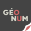

Georia Consulting
Transformez vos investissements internationaux en succès durables

Transformez vos investissements internationaux en succès durables
Georia Consulting est le cabinet de référence pour les multinationales souhaitant développer des projets agricoles et fonciers en Amérique Latine, Afrique et Asie du Sud-Est. Depuis plus de 15 ans, nous transformons les défis de l'implantation internationale en opportunités de développement durable et mutuellement bénéfique.
Dans des contextes complexes, nous accompagnons nos clients à chaque étape de leur investissement. Notre approche repose sur une connaissance approfondie des dynamiques locales, un dialogue permanent avec les communautés et la mise en place de mécanismes de compensation équitables.
Analyse approfondie des structures communautaires, des systèmes fonciers locaux et des sensibilités culturelles
Mise en place de consultations participatives avec l'ensemble des parties prenantes (autorités locales, chefs coutumiers, associations, familles affectées)
Création d'emplois locaux, construction d'infrastructures (écoles, dispensaires, routes), formation professionnelle, et plans de réinstallation dignes
Sur la carte interactive, découvrez les plus de dizaines projets où notre intervention a fait la différence.
Aucune violence signalée contre les communautés locales
Tous les déplacements négociés et compensés équitablement
Les projets ont reçu le soutien des populations locales
Transitions acceptées par toutes les parties, même en cas d'impacts inévitables
Explorez nos projets référencés sur la carte pour comprendre comment nous avons transformé des situations potentiellement conflictuelles en partenariats durables. Là où Georia intervient, les projets réussissent.
Nos interventions couvrent tous les types d'investissements agricoles : plantations industrielles (palmier à huile, hévéa, canne à sucre), cultures vivrières à grande échelle, projets agroforestiers, et acquisitions foncières stratégiques.
Georia Consulting a été essentiel pour notre implantation au Cambodge. Grâce à leur méthodologie, nous avons non seulement évité tout conflit, mais créé un écosystème où les communautés locales sont devenues nos meilleurs ambassadeurs.
Méthodologie et transparence : Les projets référencés sur notre carte incluent des interventions directes de Georia Consulting entre 2010 et 2025, ainsi que des cas d'étude que nous utilisons comme références de bonnes pratiques dans nos formations. Les données présentées combinent des informations issues de bases de données publiques (Land Matrix Initiative) et des données illustratives à des fins de démonstration de notre méthodologie. Tous les projets marqués comme "réussis" selon nos critères (absence de violence, acceptation communautaire, déplacements bien gérés) représentent le type de résultats que notre cabinet s'engage à obtenir pour ses clients.